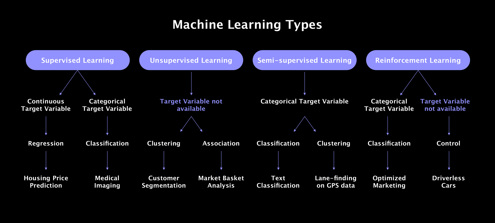

Intro
Machine learning is a subfield or Artificial Intelligence that focuses on the development of algorithms and models to improve their performance on tasks through learning from data. The system learns from examples or experiences and make predictions or decisions based on the learned knowledge.
Tasks
We can divide Machine Learning by 4 major tasks
Prediction
We look at data where we already know the outcome. The outcome is called 'Lable', so
we speak of 'labled data'.
When we see new data, we then want to make a prediction and relate the data
to one of the known lables.
This is an example of supervised learning.
Clustering
We want to group different instances of a datacollection, for example based on similarities.
This is an example of unsupervised learning.
Association rule mining
Association rule mining is used to recognize patterns in data.
This is an example of unsupervised learning.
Anomaly detection
Detecting fraud for example, used in bank transactions.
This is an example of unsupervised learning.
Types
We can divide Machine learning also by its type. Here we discuss the 3 important ones.
Supervised learning
This inclused algorithms that use labled data. Two applications are Regression and Classification.
Regression: data is numeric (nominal: no order, ordinal: with order).
Classification: data is categorical.
Unsupervised learning
These algorithms use unlabled data Most important application is Clustering.
Reinforcement learning
The algorithms collect data through simulations where he interacts with the environment and receive feedback by getting either rewards or penalties.
Summary of the Machine Learning types

Reinforcement learning
Finds the best solution in terms of some criteria (e.g., minimum cost, shortest path). An algorithm is optimal if it guarantees finding the most cost-effective solution.
Uniform cost algorithm
1.QUEUE <- path only containing the root;
2.WHILE (QUEUE is not empty AND goal is not reached)
- remove the first path from the QUEUE
-
Depth-first Search
Fusce ac egestas nibh. Maecenas et elit tortor. Pellentesque sem turpis, lobortis vel pulvinar ut, malesuada nec justo. Vivamus iaculis justo eu augue placerat, in egestas sapien volutpat. Morbi sit amet sapien faucibus ipsum interdum aliquam. Quisque vel libero eu dolor consectetur volutpat eu et tellus. Nulla facilisi. Proin pharetra dolor arcu, in vulputate magna faucibus sit amet. Maecenas venenatis purus nec elit auctor rutrum. Phasellus sed convallis lorem, eget consequat leo. Duis magna mi, dictum quis lectus dignissim, fermentum malesuada odio.
Inline equation: \(a^2 + b^2 = c^2\)
function helloWorld() {
console.log("Hello, world!");
}
Algorithms
Blind Search Algorithms
An uninformed search algorithm, searching solutions without
using any specific
information.
Examples are Breadth first Search and Depth first Search.
Breadth-first Search
Depth-first Search
Heuristic Search Algorithms
Also known as informed search algorithms. They use domain specific information like heuristics to find path to the goal.
Breadth-first Search
Fusce ac egestas nibh. Maecenas et elit tortor. Pellentesque sem turpis, lobortis vel pulvinar ut, malesuada nec justo. Vivamus iaculis justo eu augue placerat, in egestas sapien volutpat. Morbi sit amet sapien faucibus ipsum interdum aliquam. Quisque vel libero eu dolor consectetur volutpat eu et tellus. Nulla facilisi. Proin pharetra dolor arcu, in vulputate magna faucibus sit amet. Maecenas venenatis purus nec elit auctor rutrum. Phasellus sed convallis lorem, eget consequat leo. Duis magna mi, dictum quis lectus dignissim, fermentum malesuada odio.
Depth-first Search
Fusce ac egestas nibh. Maecenas et elit tortor. Pellentesque sem turpis, lobortis vel pulvinar ut, malesuada nec justo. Vivamus iaculis justo eu augue placerat, in egestas sapien volutpat. Morbi sit amet sapien faucibus ipsum interdum aliquam. Quisque vel libero eu dolor consectetur volutpat eu et tellus. Nulla facilisi. Proin pharetra dolor arcu, in vulputate magna faucibus sit amet. Maecenas venenatis purus nec elit auctor rutrum. Phasellus sed convallis lorem, eget consequat leo. Duis magna mi, dictum quis lectus dignissim, fermentum malesuada odio.
Optimal Search Algorithms
Finds the best solution in terms of some criteria (e.g., minimum cost, shortest path). An algorithm is optimal if it guarantees finding the most cost-effective solution.
Uniform cost algorithm
1.QUEUE <- path only containing the root;
2.WHILE (QUEUE is not empty AND goal is not reached)
- remove the first path from the QUEUE
-
Depth-first Search
Fusce ac egestas nibh. Maecenas et elit tortor. Pellentesque sem turpis, lobortis vel pulvinar ut, malesuada nec justo. Vivamus iaculis justo eu augue placerat, in egestas sapien volutpat. Morbi sit amet sapien faucibus ipsum interdum aliquam. Quisque vel libero eu dolor consectetur volutpat eu et tellus. Nulla facilisi. Proin pharetra dolor arcu, in vulputate magna faucibus sit amet. Maecenas venenatis purus nec elit auctor rutrum. Phasellus sed convallis lorem, eget consequat leo. Duis magna mi, dictum quis lectus dignissim, fermentum malesuada odio.
Inline equation: \(a^2 + b^2 = c^2\)
function helloWorld() {
console.log("Hello, world!");
}